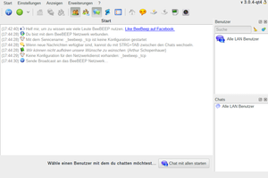
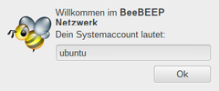
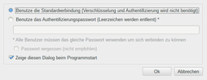
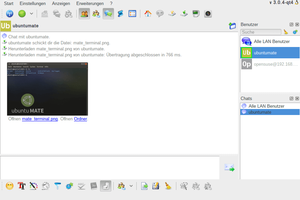
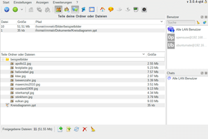

BeeBEEP
Dieser Artikel wurde für die folgenden Ubuntu-Versionen getestet:
Ubuntu 16.04 Xenial Xerus
Ubuntu 14.04 Trusty Tahr
Zum Verständnis dieses Artikels sind folgende Seiten hilfreich:
Der BeeBEEP  Secure Lan Messenger widmet sich der Kommunikation innerhalb eines lokalen Netzwerks (LAN). Natürlich kann man diese auch über das Internet abwickeln, selbst wenn man nur durch eine Wand oder einen Flur getrennt ist. Allerdings bietet eine lokale Kommunikation ein erhöhtes Maß an Privatsphäre, da die ausgetauschten Informationen das eigene Netzwerk nicht verlassen.
Secure Lan Messenger widmet sich der Kommunikation innerhalb eines lokalen Netzwerks (LAN). Natürlich kann man diese auch über das Internet abwickeln, selbst wenn man nur durch eine Wand oder einen Flur getrennt ist. Allerdings bietet eine lokale Kommunikation ein erhöhtes Maß an Privatsphäre, da die ausgetauschten Informationen das eigene Netzwerk nicht verlassen.
Merkmale:

Instant Messaging (IM) ohne zentralen Server
Optionale Verschlüsselung auf Basis des Rijndael-Algorithmus (AES)
Plattformunabhängig (Linux, Windows, Mac OS X, OS/2 und eComStation)
Versand von Dateien, Freigabe von Dateien und Ordnern
Offline-Nachrichten und Nachrichtenverlauf (History)
Installation ohne Root-Rechte, da als portables Programm ausgelegt
Hinweis:
Grundlage dieses Artikels ist die Version 3.0.x, die die Grafikbibliothek Qt 4 verwendet. Die ältere Version 2.0.x verwendet dagegen Qt 5.
Installation¶
 Das Programm ist nicht in den offiziellen Paketquellen enthalten. Die Installation muss daher manuell erfolgen.
Das Programm ist nicht in den offiziellen Paketquellen enthalten. Die Installation muss daher manuell erfolgen.
Manuell¶
Voraussetzungen¶
Folgende Pakete werden als Abhängigkeit benötigt [1]:
libqt4-xml
libqtcore4
libqtgui4
libxcb-screensaver0
libavahi-compat-libdnssd1
libphonon4
 mit apturl
mit apturl
Paketliste zum Kopieren:
sudo apt-get install libqt4-xml libqtcore4 libqtgui4 libxcb-screensaver0 libavahi-compat-libdnssd1 libphonon4
sudo aptitude install libqt4-xml libqtcore4 libqtgui4 libxcb-screensaver0 libavahi-compat-libdnssd1 libphonon4
Herunterladen¶
Über die Projektseite  oder direkt bei SourceForge lädt man eine Archivdatei im Format .tar.gz passend zur eigenen Systemarchitektur (32-/64-Bit) herunter. Diese muss anschließend noch ins Homeverzeichnis entpackt werden [2]. Der Name des Zielordners ist frei wählbar.
oder direkt bei SourceForge lädt man eine Archivdatei im Format .tar.gz passend zur eigenen Systemarchitektur (32-/64-Bit) herunter. Diese muss anschließend noch ins Homeverzeichnis entpackt werden [2]. Der Name des Zielordners ist frei wählbar.
Hinweis!
Fremdsoftware kann das System gefährden.
Programmstarter erstellen¶
Optional kann man abschließend noch einen Programmstarter erstellen. Dieser kann auch für einen automatischen Start nach der grafischen Anmeldung genutzt werden (siehe Autostart). Ein Beispiel für die Datei ~/.local/share/applications/beebeep.desktop (BENUTZERNAME und Programmpfad bitte anpassen) [3]:
[Desktop Entry] Name=BeeBEEP Name[de]=BeeBEEP GenericName=BeeBEEP Comment=Secure Lan Messenger Exec=/home/BENUTZERNAME/bin/beebeep/beebeep %u Icon=/home/BENUTZERNAME/bin/beebeep/beebeep.png Terminal=false Type=Application Categories=Network;Office; StartupNotify=true
Verwendung¶
Falls man einen Programmstarter erstellt hat, kann das Programm bei Ubuntu-Varianten mit einem Anwendungsmenü über "Büro -> BeeBEEP" oder "Internet -> BeeBEEP" gestartet werden [4]. Ansonsten wechselt man in den Ordner mit den Programmdateien und startet die Datei beebeep.
Beim ersten Programmstart erscheinen zwei Dialoge:
Gewünschter Nickname (frei wählbar)
Optionen zur Verwendung von Kennwörtern und Verschlüsselung
|  |
| Nickname |
|  |
| Authentifizierung |
Die Kernfunktion jedes Messengers ist das Chatfenster. Am rechten Rand wird es von (ausblendbaren) Listen mit anderen Nutzern oder Gruppen gesäumt. Chats können nicht nur mit Einzelpersonen oder selbstdefinierten Gruppen geführt werden, sondern auch ganz basisdemokratisch mit allen gerade im Netzwerk aktiven BeeBEEP-Nutzern.
| Aktionen | ||
| Symbol | Text | Anmerkung |
| "Broadcast an Netzwerk senden" | Chatpartner finden (erfolgt automatisch beim Programmstart) | |
| "Benutzerstatus" | Das Symbol wechselt je nach Status (online, beschäftigt, abwesend, offline) die Farbe | |
| "Zeige neue Nachricht" | ||
| "Chat erstellen" | ||
| "Gruppe erstellen" | ||
| "Benutzerübersichtsleiste anzeigen" | ||
| "Gruppenübersichtsleiste anzeigen" | ||
| "Chatübersichtsliste anzeigen" | ||
| "Chatverlaufsübersichtsleiste anzeigen" | ||
| "Datenübertragungsliste anzeigen" | Siehe Dateitransfer | |
| "Zeige BeeBEEP Start" | Übersichtsseite, die zentrale Aktionen mitprotokolliert | |
| "Chat anzeigen" | ||
| "Zeige meine geteilten Dateien" | Dateien, die man selbst zum Herunterladen anbietet (siehe Freigaben) | |
| "Zeige im Netzwerk geteilte Dateien" | Dateien, die von anderen angeboten werden | |
| "Zeige das BeeBEEP Protokoll" | ||
| "Mache einen Screenshot" | Siehe Bildschirmfoto | |
Das Beenden des Programms, das nach dem Schließen des Programmfensters im Hintergrund weiter läuft, ist nur über einen Rechtsklick  auf das Programmsymbol in der Benachrichtigungsanzeige des Panels möglich.
auf das Programmsymbol in der Benachrichtigungsanzeige des Panels möglich.
Dateitransfer¶

Um Dateien zwischen Benutzern zu verschicken, wählt man in der Benutzerübersicht den gewünschten Empfänger mit Rechtsklick und dann "Datei senden" aus. Im nächsten Schritt muss man noch die jeweilige Datei angeben. Der Versand erfolgt automatisch und ohne weiteres Zutun - vorausgesetzt, der Empfänger hat "Einstellungen -> Aktiviere Dateiversand" nicht bewusst abgeschaltet. Alternativ kann man als Empfänger "Einstellungen -> Eingabeaufforderung vor Download" aktivieren.
Gespeichert wird die Datei an der Stelle, die der Empfänger unter "Start -> Downloadordner" eingetragen hat.
Freigaben¶

Neben der Möglichkeit, Dateien aktiv zu verschicken, kann man diese auch passiv anbieten bzw. teilen. Dazu wird zuerst der Modus "Anzeigen -> Zeige meine geteilten Dateien" aktiviert. Nun können über das Kontextmenü entweder einzelne Dateien oder komplette Ordner hinzugefügt werden. Möchte man diese Freigaben wieder entfernen, erfolgt dies auf dem gleichen Weg. Oder man nutzt die Symbolleiste am unteren Fensterrand, um alle Freigaben auf einmal zu entfernen.
Bildschirmfoto¶
Unabhängig von der Möglichkeit, Dateien zu transferieren oder freizugeben, tauchen in der Praxis immer wieder Situationen auf, in denen man z.B. jemanden zu einem aktuellen Problem um Rat fragen möchte. Dann erstellt man zur Illustration des Problems einfach ein Bildschirmfoto des eigenen Desktops, dass anschließend direkt verschickt werden kann (natürlich lässt sich ein Bildschirmfoto auch abspeichern und dann via Dateitransfer übermitteln (siehe oben), aber diesen Umweg kann man sich hier sparen).
Aktiviert wird die Funktion über "Anzeige -> Mache einen Screenshot". Möchte man den (aktuellen) Desktop aufnehmen, verwendet man das entsprechende Symbol am unteren Fensterrand. In direkter Nachbarschaft befinden sich weitere Symbole ("Senden", "Speichern", "Löschen"), deren Tooltips weiterhelfen.
Erweiterungen¶
Über den Menüpunkt "Erweiterungen -> Erweiterungsmanager" können Zusatzfunktionen verwaltet werden. Drei Erweiterungen aus der Sektion "Textmarkierungen" sind bereits vorinstalliert:
"Zahlen Text Marker" - ...
"Regenbogen Text Marker" - ...
"Fett Text Marker" - ...
Einzelne Erweiterungen können über das Kontextmenü aktiviert bzw. deaktiviert werden. Neue Erweiterungen sind über SourceForge zu finden, aber derzeit für Linux nicht vorhanden (Stand: März 2016).
Einstellungen¶
Sämtliche Einstellungen sind unter dem Menüpunkt "Einstellungen" zugänglich. BeeBEEP nutzt drei Dateien im Programmordner, um diese und andere Einstellungen zu speichern:
beebeep.ini - Nutzereinstellungen
beebeep.rc - optional: Netzwerkeinstellungen
beehosts.ini - optional: mit welchen IP-Adressen kommuniziert werden darf
Die ebenfalls im Programmordner enthaltene Datei BEEBEEP-HELP.txt erläutert den Inhalt der ersten beiden Dateien, während die dritte selbsterklärend ist - zumindest wenn man des Englischen mächtig ist und grundlegende Netzwerkkenntnisse besitzt.
Problembehebung¶
Programmsprache auf Deutsch umstellen¶
Um die Programmsprache der Version 3.0.4 oder älter auf Deutsch umzustellen, lädt man die Datei beebeep_de.qm herunter und speichert diese im Programmordner.
In neueren Programmversionen ist die deutsche Lokalisierung bereits enthalten.
Nutzung via WLAN¶
Ein "Wireless LAN" (WLAN) ist prinzipiell genauso so gut geeignet wie eine traditionelle Vernetzung per Netzwerkkabel. Durch die optionale Verschlüsselung ist BeeBEEP auch für den Einsatz in Netzwerken geeignet, dessen Betreibern man nicht zwingend vertraut (Internetcafés, Unternehmensnetze etc.).
Links¶
Install BeeBEEP (Secure Lan Messenger) in Ubuntu 14.04 and Higher
 - Blogbeitrag, 10/2015
- Blogbeitrag, 10/2015Get LAN-based interoffice secure chat with BeeBEEP
- Blogbeitrag, 08/2012iptux - alternatives Programm (nur Linux)
Heimnetzwerk
 Übersichtsartikel
Übersichtsartikel
- Erstellt mit Inyoka
-
 2004 – 2017 ubuntuusers.de • Einige Rechte vorbehalten
2004 – 2017 ubuntuusers.de • Einige Rechte vorbehalten
Lizenz • Kontakt • Datenschutz • Impressum • Serverstatus -
Serverhousing gespendet von